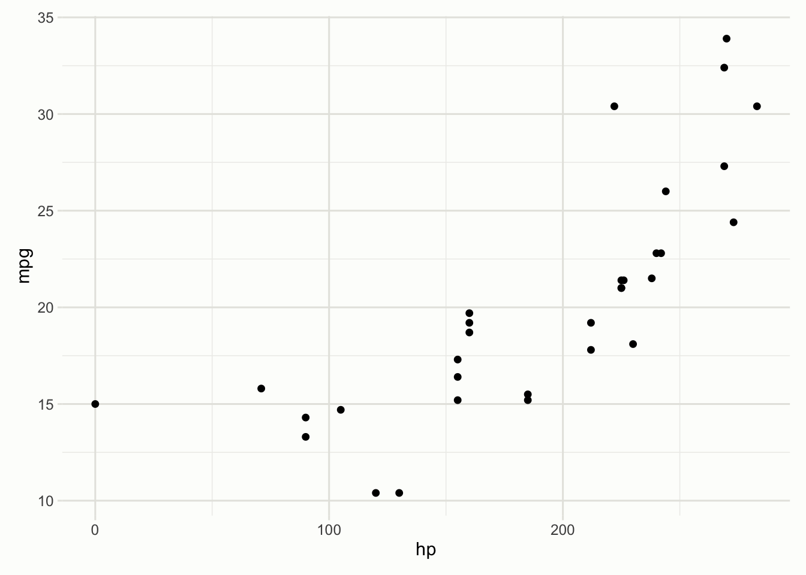
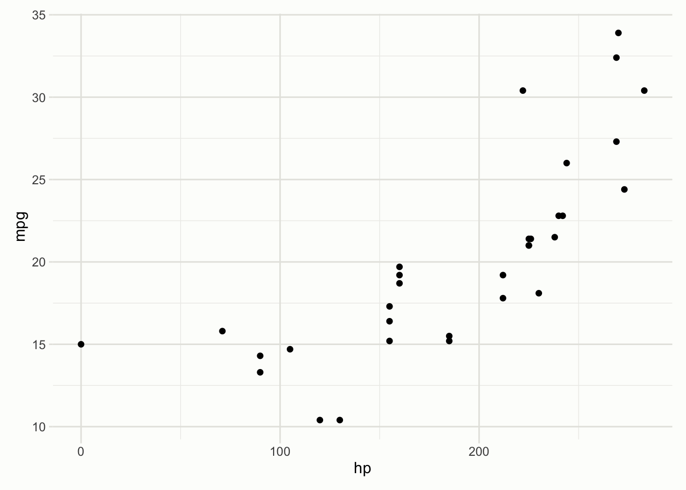
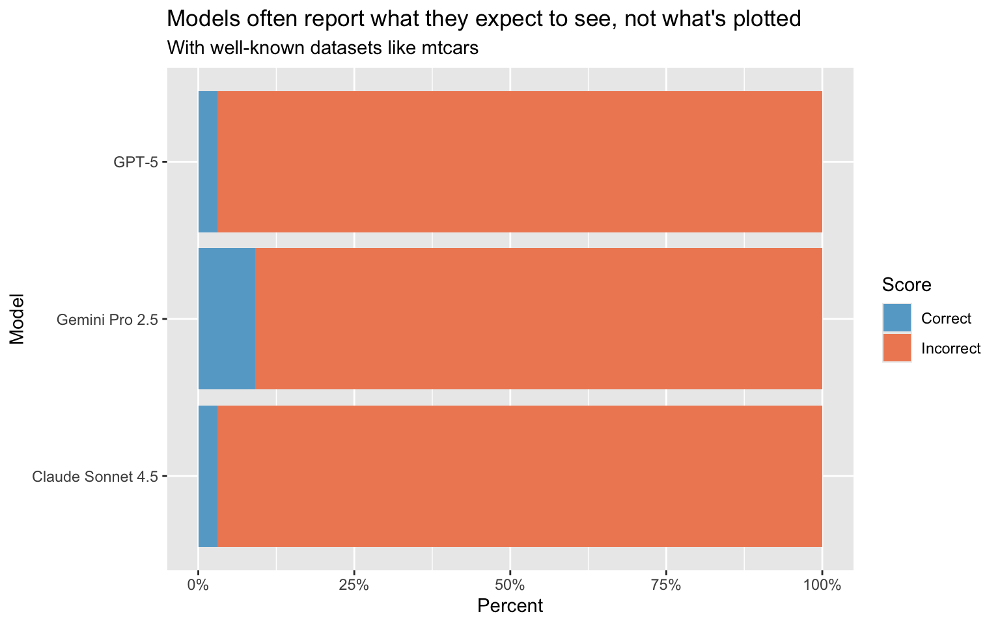
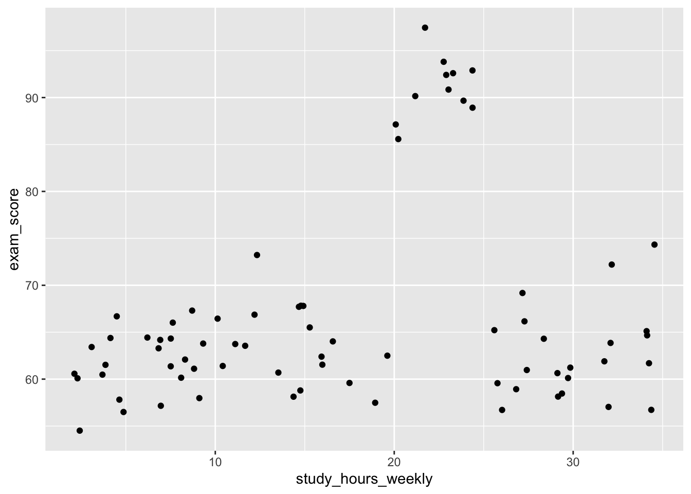
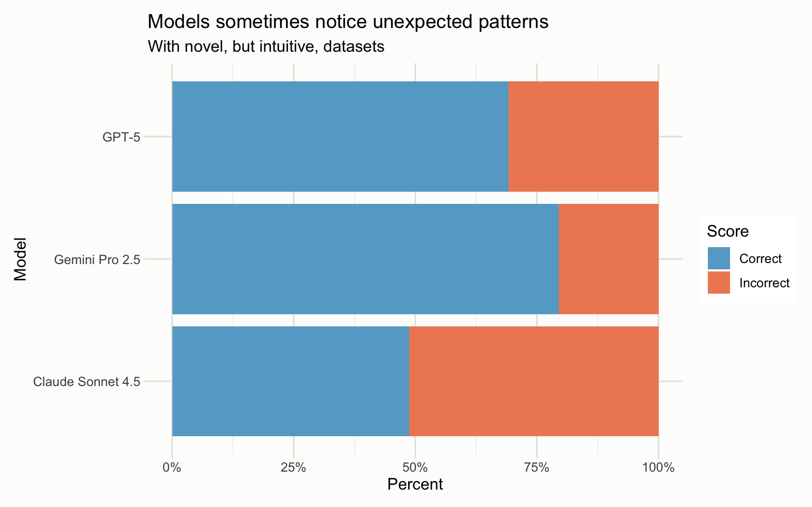

ggplot(mtcars, aes(x = hp, y = mpg)) +
geom_point()
Data science agents need to accurately read plots even when the content contradicts their expectations.
November 26, 2025
This post is a cross-post of a post on the Posit Blog, co-written with Sara Altman.
mtcars is a much-loved dataset from base R, giving information on various attributes of several car models. Let’s make a quick plot showing the relationship between horsepower and fuel efficiency:
ggplot(mtcars, aes(x = hp, y = mpg)) +
geom_point()
As expected, we see that as the horsepower increases, the fuel efficiency increases; a moderately strong, positive correlation.
Wait… did you catch that? Read that again.
That doesn’t seem right. As the horsepower of cars increases, we would expect their corresponding fuel efficiency values to decrease. Yet, this plot clearly shows that the opposite seems to be the case. That’s because, in a code chunk we didn’t show you, we applied this secret transformation:
mtcars$hp <- max(mtcars$hp) - mtcars$hpThis code replaces the true horsepower with a transformation of the horsepower that subtracts the car’s actual horsepower from the maximum value of the dataset. As such, any relationships between this variable and other variables in the dataset are “flipped” from their usual values.
Now, if LLMs write some code to plot this data and were shown the results, would they “see” this contradiction? We assembled 11 samples like this one, in which we fundamentally changed the underlying data in classic, known datasets like mtcars, diamonds, and iris. Then, we ran them through three frontier LLMs, repeating each sample three times.
Here are some example excerpts from flagship models reacting to this mtcars plot.
Claude Sonnet 4.5: Here’s what I observe from this plot: Clear Negative Relationship: There’s a strong negative correlation between horsepower and fuel efficiency. As horsepower increases, miles per gallon decreases…
GPT-5: Here’s what stands out from the plot: Clear negative association: as horsepower increases, miles per gallon generally decreases.
Gemini 2.5 Pro: …As
hpincreases,mpgtends to decrease. This indicates a negative correlation or inverse relationship.
To a surprising extent, LLMs do not catch tricks like this one, where we make secret transformations to known datasets and then ask the models to plot the data and tell us what they see. Instead, when interpreting plots, LLMs appear to see what they expect to see.

We discovered this phenomenon when working on coding agents like Databot and Positron Assistant, where generating and interpreting plots is a core capability. These agents assist data scientists by running Python and R code and looking at the results. What does it mean if those agents can’t truly “see” these plots to the extent that they’d look further if some plotted trend disagreed with their expectations?
In reality, it’s not often the case that data scientists are secretly modifying base datasets to try and trick these models in the way that we do above. So, we also tested these models in more subtle situations, where we name datasets and variables in a way that suggests some intuitive relationship will likely be observed, but the actual relationship present in the data shows the opposite (or shows no relationship at all).
For example, we can generate some data weekly study time and exam scores that looks like this:
students# A tibble: 75 × 2
study_hours_weekly exam_score
<dbl> <dbl>
1 20.2 85.6
2 8.31 62.1
3 8.09 60.1
4 24.4 92.9
5 32.1 63.9
6 29.1 60.6
7 23.9 89.7
8 34.2 61.7
9 14.8 58.8
10 28.4 64.3
# ℹ 65 more rowsBoth humans and LLMs likely expect study time to be correlated with exam time, but this dataset shows essentially no correlation between these two variables and a large discontinuity in one range of the data:
ggplot(students, aes(x = study_hours_weekly, y = exam_score)) +
geom_point()
If either of us came across such a plot as a data scientist, this would definitely raise an eyebrow. What’s going on with those observations in the 20-25 bucket? Is this a data quality issue? Was there some sort of assisted study program that happened to run 20-25 hours a week? This is the capability we’re most concerned about as we develop these agents; do Databot and Positron Assistant see these subtle anomalies that go against their expectations and investigate further? We assembled 13 samples like this one, running them through the same models, three times each. Here are some excerpts from this sample’s responses:
Claude Sonnet 4.5: …Interesting outliers: There’s a cluster of high performers (scores 90-100) who study around 20-25 hours per week… While more study time is associated with slightly better scores on average, it’s clearly not the only factor determining exam performance.
GPT-5: Possible subgroups/outliers: A distinct cluster around ~20–25 hours with very high scores (~90–100).
Gemini 2.5 Pro: …The group that studied around 20-25 hours a week did significantly better than those who studied even more. This suggests that simply studying more doesn’t always lead to a better score, and there might be other factors at play.
The results from this set of experiments are certainly more promising:

That said, we still don’t find these percentages encouraging; a typical data scientist would not have only a 50/50 chance at spotting that discontinuity. This is partially why Databot’s interface shows intermediate results to the user and yields control to them regularly. Working with LLMs to carry out data science still requires human skepticism and curiosity, especially as long as LLMs are still prone to these types of mistakes.
We’re actively working on systems that result in more faithful interpretations of plots. The obvious tricks—changes to system prompts or tool descriptions, “models-in-the-middle” that have some subset of the real context, etc.—haven’t made much of a difference. Once we’ve built systems that result in improvements here, those changes will make their way to our agents and we’ll share more here.
If you want to learn more about these experiments, check out bluffbench’s homepage. bluffbench is an LLM evaluation implemented in R with ellmer and vitals. In addition to a write-up similar to the one here, the evaluation logs are also available on the evaluation’s website, allowing you to explore the full transcripts of each LLM’s response and the corresponding grading applied to each submission.